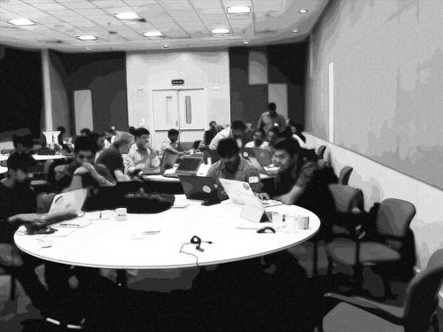

Tips I have Learned by Being a Trainer for a Year

Posted: 2016-10-24
Teaching notes
Have the attendees introduce themselves to their neighbor(s)
The isolation and separateness that ones feels in a room of mostly strangers, about to embark on a few hours or a few days of training can melt away in the matter of 5 minutes. In this technique, for about 5 minutes at the very beginning before any presentation begins, I ask everyone to take a moment and introduce themselves to their neighbors(s). I encourage them to state their name, role and an interesting fact about themselves.
This technique forms very useful connections that will serve in the future when one person may need help or a discussion needs to take place to formulate a question to the instructor. When the hands-on-labs role around, the students now know some of their neighbors and can work together on a problem. When it comes time for a build-a-thon or hackathon, the students will likely feel more comfortable forming groups.
Lead with a motivating example or at least "what you will be able to do by the end"
In the best scenario I have a demo that wows the audience or at least immediately gets their attention. The demo could be a Power BI dashboard driven by streaming data flowing in from a weather station. It could be a service that allows me to upload a picture and returns the contents of that image in natural language (like CaptionBot). It could be a fast process, such as running a large machine learning computation out-of-core on a single laptop, lightning fast, perhaps predicting tens of thousands of numeric labels on a hand-written data set of digits using a trained classificaion model.
Seeing something run and produce an amazingly quick and/or fascinating result or a dashboard powered by fast moving data streaming in, real-time, can definitely inspire and motivate those who like that sort of thing.
Always have advanced exercises for students who want to go ahead
I feel one of the worse outcomes is not being challenged. We mostly all like a good challenge and in the end, for me at least, it gives a feeling of accomplishment. I learn best when I am challenged to think and/or be creative. In the hands-on-labs this is especially important. And it's really easy to incorporate Advanced Exercises into the lab instructions. Then I simply let them work and encourage them to keep going if they finish something earlier than others. Just remember, it's got to be motivating and fun. Basically, I try to always peak their curiosity and keep it rolling.
Make mistakes and be a real person
This helps normalize the instructor to the students, removing barriers that might be there or percieved. It humanizes the instructor and puts the students at ease knowing they too can explore their studies and make mistakes. After all, the instructor did this in front of everyone.
When I make a mistake, I admit it and I ask for help from the audience. Also, when I forget something, can't remember a detail or am stumped, I pose the question to the audience to get them both thinking and my answer back (hopefully). In this way, it serves many purposes: engagement by having a group exercise and audience participation, normalizing everyone (especially the instructor to the students) and getting the answer.
Sticky notes (red = I need help or I'm not ready to move on, another color = no problem here)
I borrowed this idea from Michael Levy (see Credits at the bottom) who teaches R at scale. The basic premise is to allow students to indicate a problem, be it I'm moving too fast, they don't fully understand something, they need more time or have a quesion. The red sticky note is then placed on the front of the laptop so that I can see it from the front of the room. It's mainly useful in the hands-on-labs portions or the build-a-thon/hackathon. This way students don't have to keep a hand raised or feel they are intruding or disturbing a class. It equalizes things a little bit I believe, adding to the ease and freedom to ask a quesion or ask for help. It's been popular and successful in the past especially in situations where the room is very quiet (like in a self-paced, self-guided tutorial).
At the end you may have the students leave the sticky notes (a red is dissatisfied and the other color is satisfied) in an anonymous spot.
Some attendees expressing their appreciation:

Credits
I have to give Michael Levy credit for many of these ideas from his fantastic blog post on Teaching R to 200 students in a week here.